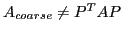

Algebraic multigrid (AMG) is a popular and effective solver for systems of
linear equations that arise from discretized partial differential equations.
While AMG has been effectively implemented on large scale parallel machines,
challenges remain, especially when moving to exascale. In particular, as
problem size increases, so does the number of levels in the hierarchy of
coarse-grids, with the pernicious result that coarse-grid operators tend to
become denser further down in the hierarchy. This produces denser
communication patterns than existed on fine grids and as a result, as problem
size increases, denser coarse-grid matrices are produced, and the communication
pattern and overall parallel AMG scheme become less efficient. This increase
in density is due to the standard Galerkin coarse-grid operator,
 , where
, where  is the prolongation (i.e., interpolation) operator.
Typical choices for
is the prolongation (i.e., interpolation) operator.
Typical choices for  couple most distance-two and many distance-three
connections in the graph of
couple most distance-two and many distance-three
connections in the graph of  , and this results in the increasing fill. For
a simple 7-point 3D diffusion problem, coarse-grid stencil size can increase to
over 1,000 on present day machines. We therefore consider algebraically
truncating coarse-grid stencils to obtain a non-Galerkin coarse-grid, i.e.,
, and this results in the increasing fill. For
a simple 7-point 3D diffusion problem, coarse-grid stencil size can increase to
over 1,000 on present day machines. We therefore consider algebraically
truncating coarse-grid stencils to obtain a non-Galerkin coarse-grid, i.e.,

. First, the sparsity pattern of is determined through the fine-grid matrix graph, which indicates important distance-two and -three connections that should be maintained on the coarse-grid. Second, the nonzero entries are determined by collapsing the stencils in the Galerkin operator using traditional AMG techniques. The result is a reduction in coarse-grid stencil size, and overall operator complexity, with the trade-off that AMG convergence deteriorates only a small to moderate amount for the problems considered.